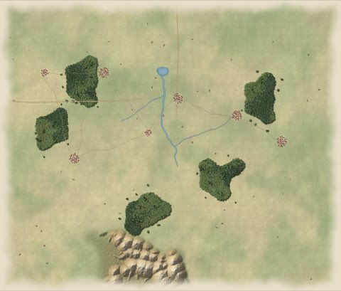

Stage 1 of 17 · 1939
Poland
Fall Weiss
At dawn the Wehrmacht crosses the Polish frontier. Army Group North strikes from Pomerania, Army Group South from Silesia and Slovakia. Poland's armies are deployed forward and its allies are far away. Take Warsaw and the four regional centres before the autumn rains turn the roads to mud.
- Date
- 1 September 1939
- Turns
- 13 (decisive by turn 8)
- You command
- German forces, 13 units
- Against
- Polish forces, 12 units
- To win
- Take all 5 objectives by the end of turn 13; take them by turn 8 for a decisive victory.
- Objectives
- Warsaw, Poznan, Lodz, Krakow and Lwow
- Weather
- Clear; rain from turn 9; mud from turn 11
- In a match
- Allied side Favoured, Axis side a Hard Challenge
Next: France.
What really happened
The invasion of Poland
1 September to 6 October 1939
Germany invaded on 1 September 1939, with armoured columns converging on Warsaw. Britain and France declared war but did not attack in force. On 17 September the Soviet Union invaded from the east. Warsaw surrendered on 28 September after heavy bombing, and the last Polish field forces laid down their arms on 6 October.
The cost. About 16,000 German dead. About 66,000 Polish soldiers dead and 694,000 captured by Germany. An estimated 10,000 to 25,000 civilians died in the siege of Warsaw.